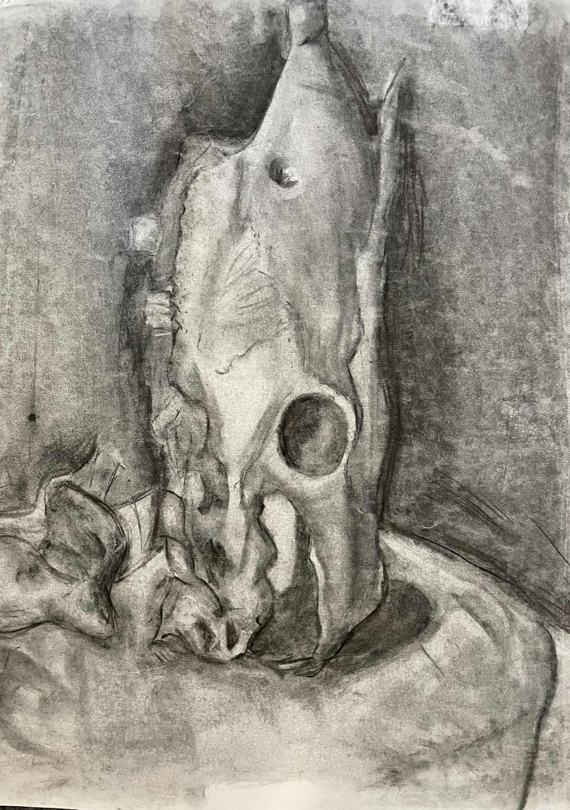

| <<Home>> |  |
|
Title: Bone Dimensions: 18X24 in Details: One of my first practices with a still life. It taught me the patience required to observe objects before jumping in and tackling the work. This art was done in ARTT210. |
||